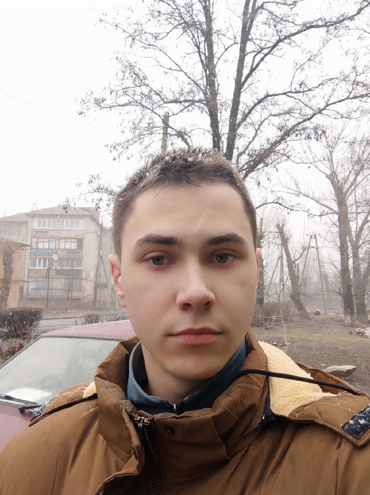

"Книжная ученость — украшение, а не фундамент."
Мишель Монтень
 Я создатель WEB-Cайта рассказывающего в общих чертах о отличии языка Python и Pascal. Меня зовут Ростислав, я ученик 11-А класса Перевальской гимназии№1. Это всё что я могу сказать.